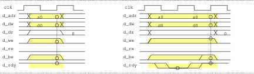

rv_core module
rv_core は以下の機能を有する CPU コアモジュールである
FPGAに実装してコントローラとして用いる目的で、最小限の仕様を実装した
- 命令バス、データバス 各 address 32bit / data 32bit
- 外部割り込み 1系統
- タイマーカウンターと、タイマーコンペア割り込み
入出力
typedef logic [3:0] u4_t;
typedef logic [31:0] u32_t;
module rv_core #(parameter debug = 0) (
input logic clk, // clock
input logic xreset, // 0:リセット
// ---- 命令バス ----
output u32_t i_adr, // address (byte address)
input u32_t i_dr, // read data (命令)
output logic i_re, // read enable
input logic i_rdy, // data ready
// ---- データバス ----
output u32_t d_adr, // address (byte address)
input u32_t d_dr, // read data
output logic d_re, // read enable
output u32_t d_dw, // write data
output u4_t d_we, // write enable (byte enable)
input logic d_rdy, // data ready
input logic d_be, // big endian
input logic irq // interrupt request
);
Memory map
rv_core のメモリマップである
リセット解除後 0x0 番地から実行を開始する
0xFFFF0000 番地以降をメモリマップ I/O 領域とした
タイマーカウンター(mtime)、タイマー比較レジスタ(mtimecmp) は 0xFFFF8000, 0xFFFF8008 に配置した
| Address | Description | |
|---|---|---|
| 0x00000000 | reset start address | |
| ： | 命令/データ領域 | 命令：16bit align / データ:32bit align |
| 0xFFFF0000 ~ 0xFFFF7FFF | I/O 領域 | |
| 0xFFFF8000 | mtime | 64bit タイマーカウンター |
| 0xFFFF8008 | mtimecmp | 64bit タイマー比較レジスタ |
CSR Control and Status Register
ISAマニュアル vol II に定義されている CSR のうち、以下の CSR を実装した
主にタイマー、及び外部割り込みの制御に用いる
ソフトウェア割り込みは実装していない
| Number | Privilege | Name | Description | |
|---|---|---|---|---|
| 0x305 | MRW | mtvec | Machine trap-handler base address | |
| 0x304 | MRW | mie | Machine interrupt-enable register | b11:MEIE b7:MTIE |
| 0x344 | MRW | mip | Machine interrupt pending | b11:MEIP b7:MTIP |
| 0x341 | MRW | mepc | Machine exception program counter | |
| 0x341 | MRW | mcause | Machine trap cause | |
| 0xC01 | URO | time | Timer for rdtime instruction | |
| 0xC81 | URO | timeh | Upper 32bits of time (for rdtimeh insn) |
| Symbol | Description |
|---|---|
| MRW | Machine level read/write |
| URO | User level read-only |
| MEIE | External interrupt enable |
| MEIP | External interrupt pending |
| MTIE | timer interrupt enable |
| MTIP | timer interrupt pending |
命令/データバス接続
- 命令バスは compress 命令に対応し、16bit align でアクセスされる
命令メモリは、16bit align で 32bit 読み出しができる必要がある - データバスはデータメモリとペリフェラルを接続する
32bit バスであるが、write enable d_we[3:0] により、byte/16bit/32bit アクセスを行う
read 時も、アクセスモードに応じて 32bit データの必要な byte を取り込む
32bit データ内のバイトアクセス順は little endian であるが、d_be 信号を assert することにより、 big endian に切り替えることができる - read / write 各 1 clock cycle でアクセスするが、rdy 信号を任意サイクル de-assert することで cycle を延長できる
bus timing
-
命令バス read timing
i_re が assert されたとき、i_adr に対応する命令を読み出し、次のサイクルで i_dr に返す
i_adr をデコードし、必要に応じて i_rdy を de-assert することで、アクセスサイクルを追加できる

-
データバス write timing
d_we[3:0] が assert されたとき、d_adr に対応するアドレスの d_we のバイトイネーブルに対応するバイトに d_dw データを書き込む
d_be を assert することで、d_we のバイトイネーブル順序を big endian 相当に変更できる
d_adr をデコードし、必要に応じて d_rdy を de-assert することで、アクセスサイクルを追加できる
 -
データバス read timing
d_re が assert されたとき、d_adr に対応するアドレスのデータを読み出し、次のサイクルで d_dr に返す
d_dr はメモリ、ペリフェラル群の各ブロックのデータを or するので、各ブロックのリードデータが有効でないときは 0x0 を返す必要がある
d_be を assert することで、d_dr の読み込みバイト順序を big endian 相当に変更できる
d_adr をデコードし、必要に応じて d_rdy を de-assert することで、アクセスサイクルを追加できる
-
データバス byte addressing
d_dr/d_dw 32bit データのバイト順序を示す
d_be による endian 切り替えを図示する
Reset, Interrupt
ハードウェアリセット時、プログラムカウンタ pc は 0x0 にリセットされ、リセット解除時 0 番地から実行を開始する
割り込みは、rv_core 内臓の 64bit タイマー割り込みと、外部端子 irq による割り込みを実装した
リセット解除後の初期化ルーチンでは、スタックポインタの設定と割り込み処理ルーチンのベクター(mtvec)を行う
la sp, __stack_top # stack pointer 設定
la t0, _irq_handle # 割り込みハンドラアドレス
csrw mtvec, t0 # mtvec に設定
- タイマー割り込み
64bit タイマーカウンタ mtime は、リセット解除後 clock でインクリメントし続ける。
mie レジスタ MTIE ビットをセットすることで、タイマー割り込みが許可される。
mtime > mtimecmp となり、mie.MTIE が 1 のとき割り込みが発生し、mip.MTIP がセットされ、pc を mepc にセーブして mtvec レジスタの指すアドレスにジャンプする。 割り込み処理ルーチンは、割り込み要因を調べ、要因クリアしなくてはならない。
タイマー割り込み要因は mtimecmp の値を更新（次の割り込みを期待するカウンタ値に更新）するか、または mie.MTIE をリセットすることでクリアする。 - 外部割り込み
mie レジスタ MEIE ビットをセットすることで、外部割り込みが許可される。
外部割り込み端子 irq が 1 で、mie.MEIE が 1 のとき割り込みが発生し、mip.MEIP がセットされ、pc を mepc にセーブして mtvec レジスタの指すアドレスにジャンプする。 割り込み処理ルーチンは、割り込み要因を調べ、要因クリアしなくてはならない。
外部割り込みの要因調査、要因クリアは、各外部回路の仕様による。
パイプライン構造